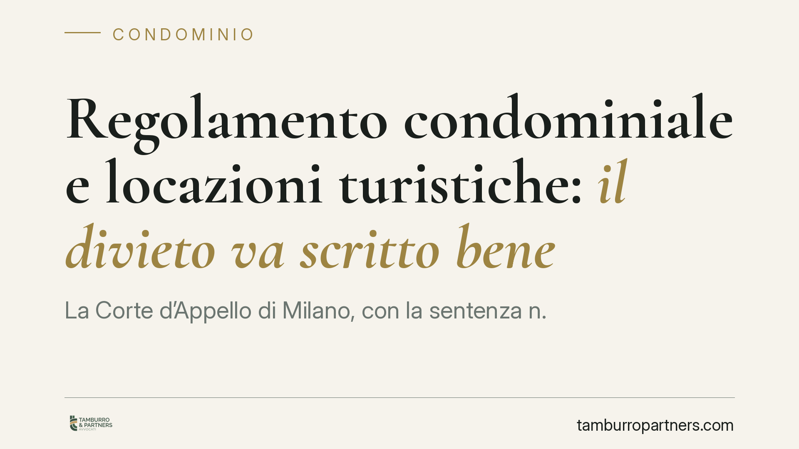

Regolamento condominiale e locazioni turistiche: il divieto va scritto bene
La Corte d'Appello di Milano, con la sentenza n. 514/2026, ha stabilito che un vecchio regolamento condominiale che vieta locande e pensioni non può essere esteso per analogia a B&B e locazioni turistiche brevi. I divieti regolamentari vanno interpretati in modo rigoroso: richiedono clausole esplicite, aggiornate e la prova di disagi concreti. Una pronuncia che ridisegna i confini tra autonomia condominiale e libertà di godimento della proprietà.

Il caso
Un condominio aveva contestato a un proprietario l'avvio di un'attività di locazione turistica breve, invocando una clausola del regolamento che vietava di adibire gli appartamenti a "locande, pensioni o attività alberghiere". La tesi: B&B e affitti brevi rientrerebbero, per analogia, nello stesso divieto.
La Corte d'Appello di Milano ha respinto questa lettura. Le clausole regolamentari che comprimono i diritti dei singoli proprietari vanno interpretate in senso stretto, non estensivo. Un divieto pensato decenni fa per le "pensioni" non copre automaticamente fenomeni economici e abitativi nati dopo, come le locazioni turistiche disciplinate dal D.L. 50/2017.
Inquadramento normativo
Le locazioni turistiche brevi trovano riferimento nell'art. 53 del Codice del Turismo e nella disciplina fiscale introdotta dall'art. 4 del D.L. 50/2017 (convertito dalla legge n. 96/2017), che regola i contratti di durata non superiore a trenta giorni. Si tratta di attività che, in linea di principio, rientra nel normale godimento della proprietà privata.
Il punto cruciale riguarda la natura delle clausole regolamentari. Secondo un orientamento consolidato, i divieti che limitano le facoltà del proprietario sui beni di proprietà esclusiva hanno natura "contrattuale": vincolano i condòmini solo se approvati all'unanimità (o accettati nei rogiti d'acquisto) e, soprattutto, se formulati in modo chiaro e specifico. L'art. 1138 del Codice civile, infatti, non consente al regolamento di menomare i diritti dei singoli sulle rispettive porzioni di proprietà in assenza di un titolo espresso.
Da qui la regola dell'interpretazione rigorosa: nel dubbio, prevale la libertà del proprietario. Un elenco di attività vietate (locande, pensioni) non può trasformarsi, per via interpretativa, in un divieto generale di ogni forma di ospitalità a pagamento.
Implicazioni pratiche
La pronuncia ha un duplice impatto.
Per il condòmino locatore, significa che un regolamento datato, costruito su categorie oggi superate, difficilmente potrà fondare un divieto di B&B o affitto breve. Il semplice richiamo a "pensioni" o "attività ricettive" di vecchia formulazione non basta.
Per il condominio che intenda effettivamente limitare queste attività, la sentenza fissa un onere preciso: non è sufficiente una clausola generica. Occorre una disposizione che nomini espressamente le locazioni turistiche e i B&B, approvata con le maggioranze richieste per le clausole contrattuali. E, in caso di contenzioso, serve la prova di disagi concreti: viavai anomalo, rumori, problemi di sicurezza, uso improprio delle parti comuni. Il mero fastidio per la presenza di ospiti temporanei non è, di per sé, un argomento giuridicamente rilevante.
Questo sposta il baricentro dalla contrapposizione ideologica alla verifica dei fatti. Non basta "non volere" i turisti nel palazzo: bisogna dimostrare che la loro presenza altera concretamente le condizioni di convivenza.
Cosa fare in concreto
- Verificate il testo esatto del regolamento prima di avviare o contestare un'attività ricettiva: controllate se contiene un divieto espresso e aggiornato, non una formula generica.
- Se siete condòmini locatori, conservate la documentazione sull'attività (durata dei soggiorni, numero degli ospiti, assenza di segnalazioni) per dimostrare l'uso corretto delle parti comuni.
- Se siete un condominio che vuole limitare queste attività, promuovete una modifica regolamentare con clausole specifiche, approvate con le maggioranze corrette, evitando di affidarvi a disposizioni obsolete.
- Documentate eventuali disagi in modo oggettivo: la prova dei pregiudizi concreti è decisiva in giudizio.
- Valutate preventivamente la natura della clausola (assembleare o contrattuale): da questa qualificazione dipendono maggioranza necessaria e opponibilità ai singoli.
La decisione milanese non apre né chiude le porte alle locazioni turistiche in condominio. Ricorda, piuttosto, che i divieti vanno scritti con precisione e provati con i fatti. Consigliamo di sottoporre il regolamento a una verifica tecnica prima di qualsiasi iniziativa, nell'uno e nell'altro senso.
---
*Contributo informativo a cura di Tamburro & Partners - Avv. Giuseppe Tamburro. Non costituisce parere legale.*
Ogni condominio ha una storia a sé.
Se gestisci un'amministrazione e vuoi un confronto su una specifica questione condominiale, scrivi allo studio. Ti rispondiamo entro un giorno lavorativo.